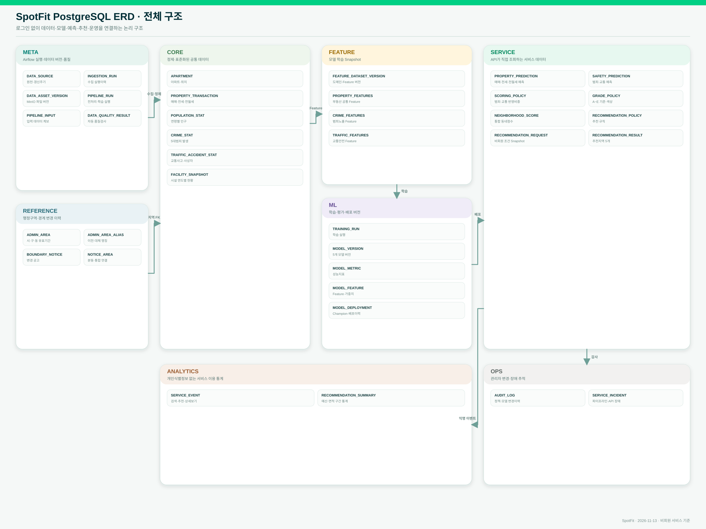
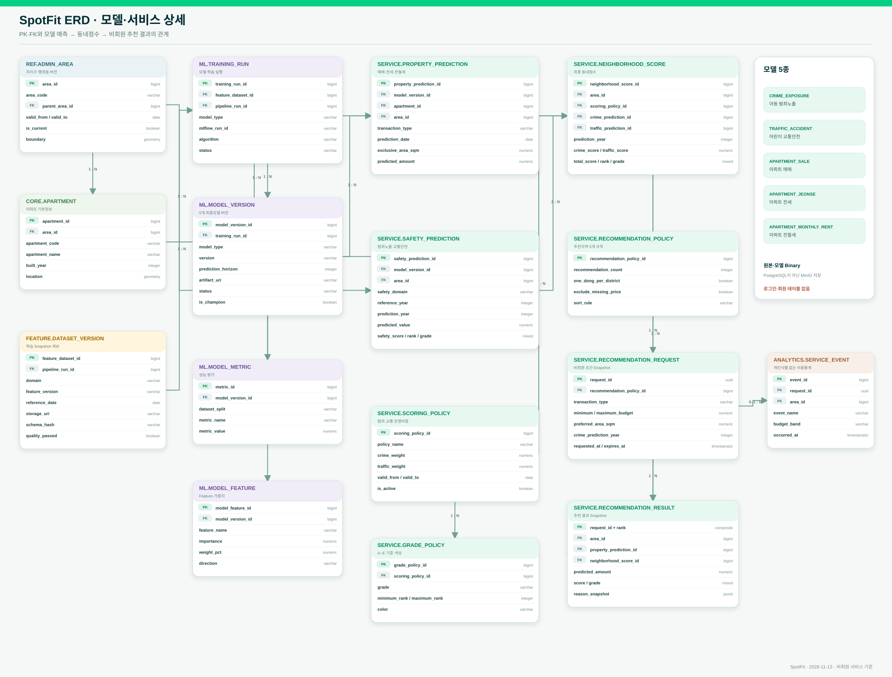

SpotFit PostgreSQL ERD
비회원 서비스 · Airflow 자동화 · 5개 최종모델 기준
1. 전체 구조

데이터 수집부터 서비스·운영까지 Schema 단위 흐름입니다.
2. 모델·서비스 상세

확대하면 각 테이블의 PK·FK와 주요 컬럼을 확인할 수 있습니다.
비회원 서비스 · Airflow 자동화 · 5개 최종모델 기준

데이터 수집부터 서비스·운영까지 Schema 단위 흐름입니다.

확대하면 각 테이블의 PK·FK와 주요 컬럼을 확인할 수 있습니다.